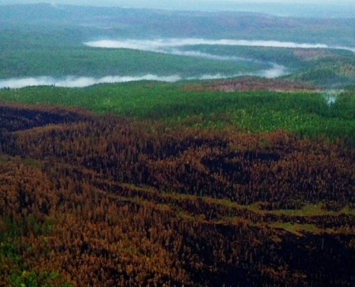
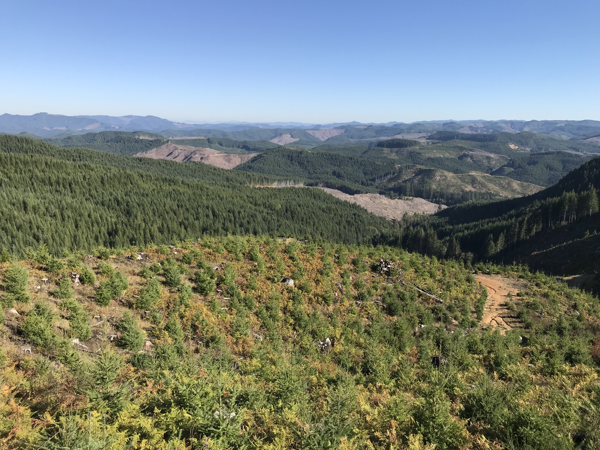

Research
Drivers of High Severity Burn Area
Vary across a climatic gradient in Western US conifer forests
High-severity wildfires are a growing concern in the Western U.S. due to climate-driven fire season expansion and increased fuel loading and continuity from decades of fire exclusion. However, it remains unclear how the relative influence of fuels versus climatic departure on high severity burn area vary across long-term climate gradients. We delineated CWD-defined climate regions (mesic, intermediate, xeric) and evaluated how fuel availability, heterogeneity, connectivity, topography, and climatic departure influence extreme (95th percentile) high-severity burn area in over 4,000 burned conifer watersheds from 1986 to 2024. Fuel variables were important across all regions but had the strongest effects in xeric watersheds. Short-term climatic departure (VPD during the month of ignition) was also an important driver in xeric systems but played a minor role in mesic forests. Conversely, long-term climatic departure (five-year CWD) was the strongest predictor in mesic forests, suggesting that multi-year drought is particularly influential in these infrequent-fire regimes. Our results demonstrate that the drivers of high-severity burn area vary predictably across CWD-defined climate gradients and highlight the need for region-specific strategies to manage large, high-severity fires.

Satellite-derived Geospatial Fuel Products
To aid Upper Rio Grande fuel treatment planning
Dry forests in the western US are exposed to heightened risks of large high-severity fires and limited forest regeneration as a result of fire exclusion and climate change. Given significant limitations on time and resources for implementing and monitoring fuel treatments, availability of up-to-date, accurate, high-resolution, and updateable data products characterizing forest structure and fuel conditions could make a meaningful contribution to strategic planning and monitoring of fuel treatments. To aid in fuel treatment planning in Northern New Mexico, we are developing geospatial data products characterizing forest structure and fuel conditions by training satellite synthetic aperture radar (SAR) and multispectral imagery using measurements of forest structure and fuel conditions derived from airborne lidar and forest inventory plot data.

Methods of CBH Characterization
Vary across data source and summary method
Canopy base height is an integral variable in wildfire behavior modeling. However, as fire models have been applied to increasingly diverse forest structures and as remote sensing technologies have advanced, a variety of methods for characterizing CBH have emerged. In this project, we summarize the primary approaches for CBH characterization using field observation, airborne LiDAR, and satellite-based machine learning models, highlighting their assumptions, scales, and limitations. We then apply these methods across 100 field sites within four forest types in northern New Mexico to evaluate how method choice and forest structure influence CBH characterization. These CBH measurements were then applied in Rothermel-based models to compare methodological effects on predicted torching indices.

Future Drought Impacts
in the Oregon Coast Range
The Coast Range of Oregon is one of the most productive ecosystems globally, acting as an important store of carbon and source of timber products. However, drought risk is expected to increase during the twenty-first century, especially in the southern Coast Range. This may have important implications for the growth and recruitment of drought-intolerant species such as western hemlock and western redcedar. To investigate the potential affects future climates may have on species growth and recruitment, I am working with a group of researchers at the University of Oregon to model forest succession in the Coast Range using the forest landscape model, LANDIS-II.

Siberian Timber Sustainability
Ecosystem Services under Climate Change
The boreal forests of Eurasia form the largest contiguous terrestrial biome in the world, providing numerous ecosystem functions and services for human societies. Temperatures are increasing most rapidly in high northern latitudes, altering tree growth and competition dynamics, and modifying disturbance regimes. The effect of these cumulative changes on the ecosystem functions provided by boreal forests is difficult to predict. We used the process-based LANDIS-II forest landscape model to evaluate how climate change and timber harvesting will interact to alter the production of ecosystem goods and services in boreal forests on three study areas across a large latitudinal gradient in central Siberia.

Balancing Ecosystem Services in the Elliott State Research Forest
Land sharing vs sparing vs Triad forestry
The Elliott State Forest, Oregon’s oldest state forest, has long been at the center of debate over public land management. One proposed resolution is the establishment of the Elliott State Research Forest (ESRF), designed to balance timber production, climate change mitigation, endangered species conservation, and recreation. Supported by the Oregon Department of State Lands and in collaboration with Oregon State University, this project contributed to the development of the ESRF’s forest management plan. At the center of this plan is the experimental comparison of land sharing, land sparing, and Triad management. Using LANDIS-II, we simulated forest successional processes, management activities, natural disturbances, and multiple climate trajectories to inform sustainable management strategies and compare trade-offs between these three conservation strategies.
